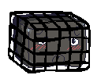

About FtUCS
In this country founded on the principles of freedom, there is a grave injustice that persists to this day. Semester after semester, the UC stones remain locked away at the forefront of this University Center. Tartans crossing the cut, pedestrians traversing Forbes, and students exercising in the gym all frequently bear witness to this reprehensible tragedy, much to their chagrin.
To help alleviate people of the infinite distress that this sighthas caused them, we have developed the mobile service FtUCS. In FtUCS, users are given the ability to free the UC Stones! But beware, as there are all sorts of villains looking to keep these stones caged. Once a player has exhausted the encounters available in the game, it’s still not over. Compete with your friends to see who can restore the most justice at CMU! Play FtUCS today, available for all mobile platforms on logicalshark.github.io/freetheucstones/.